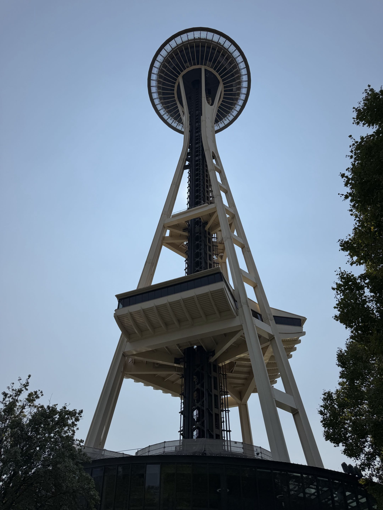
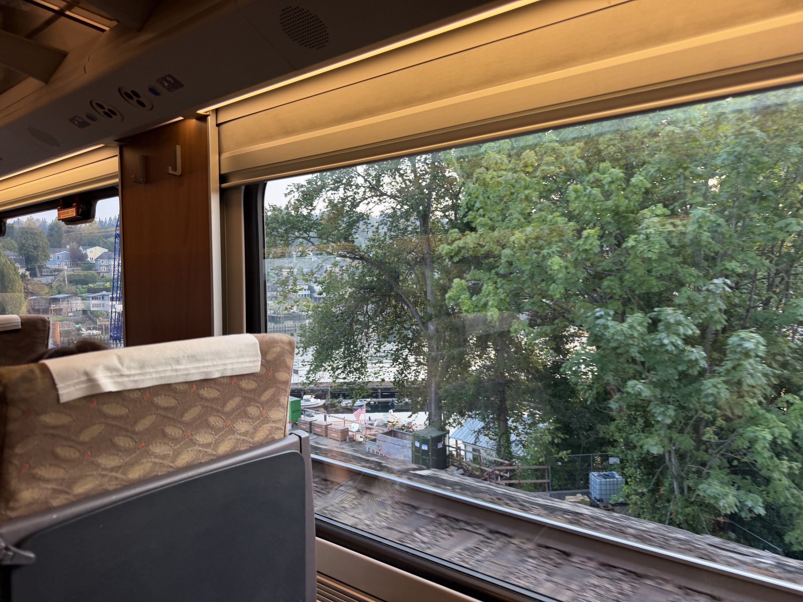
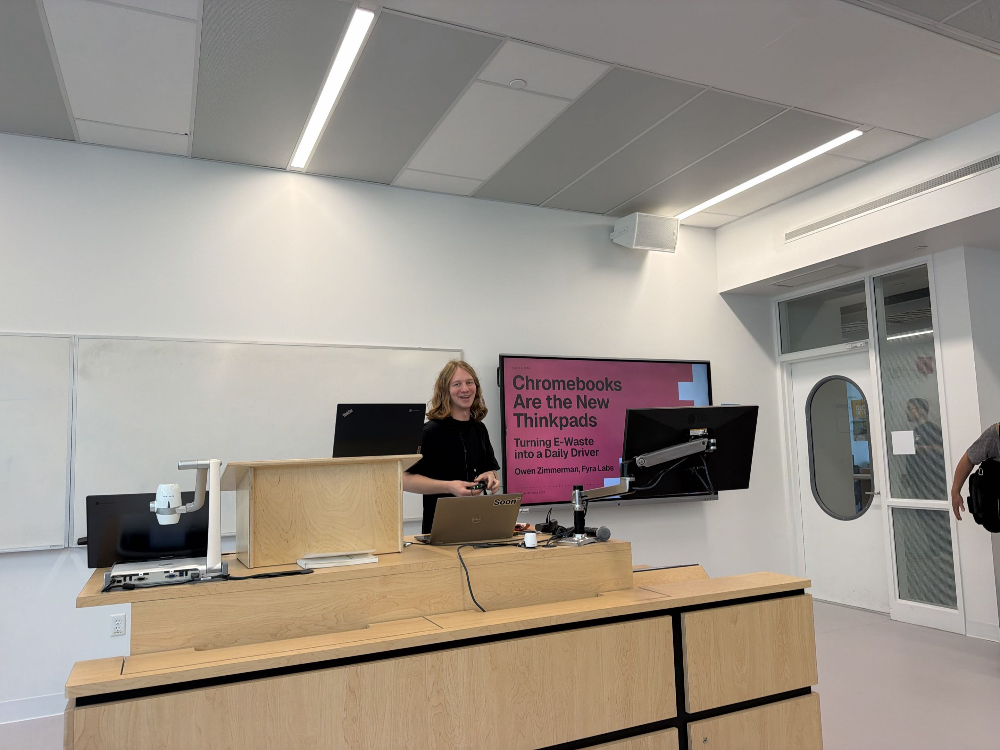
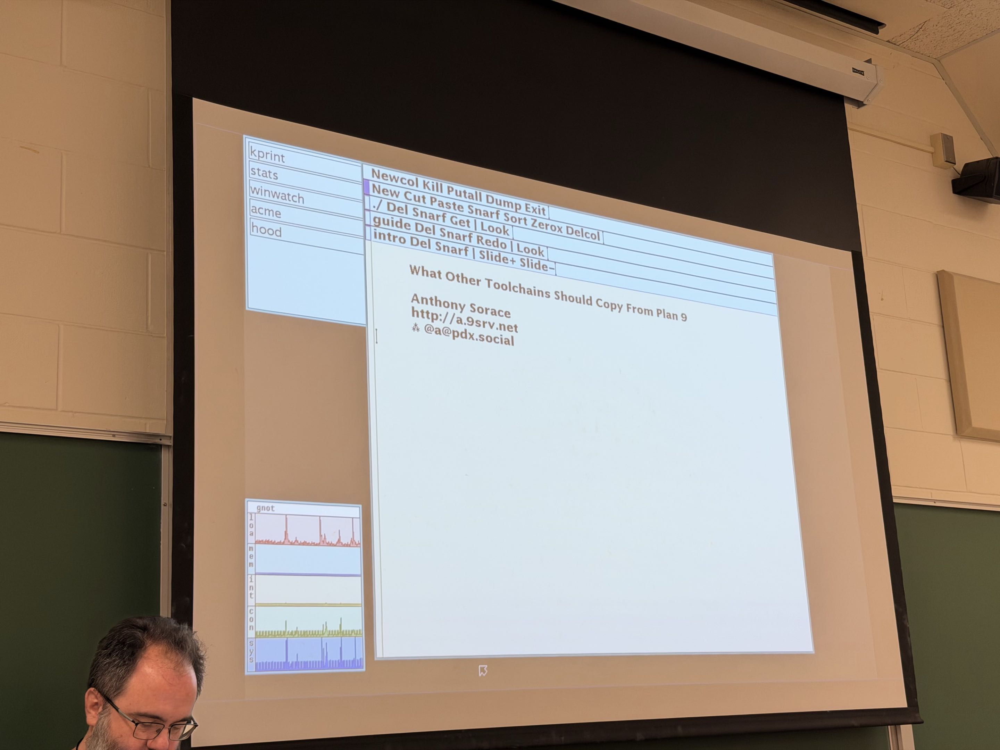
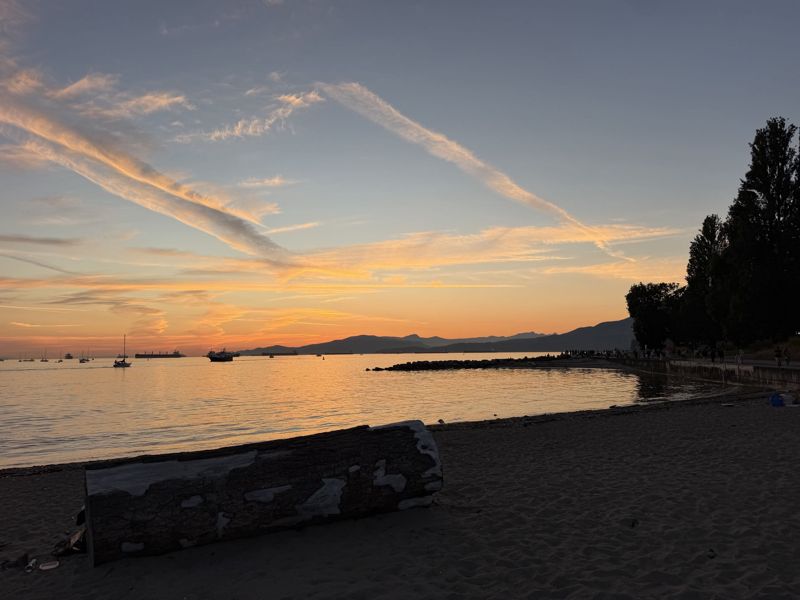
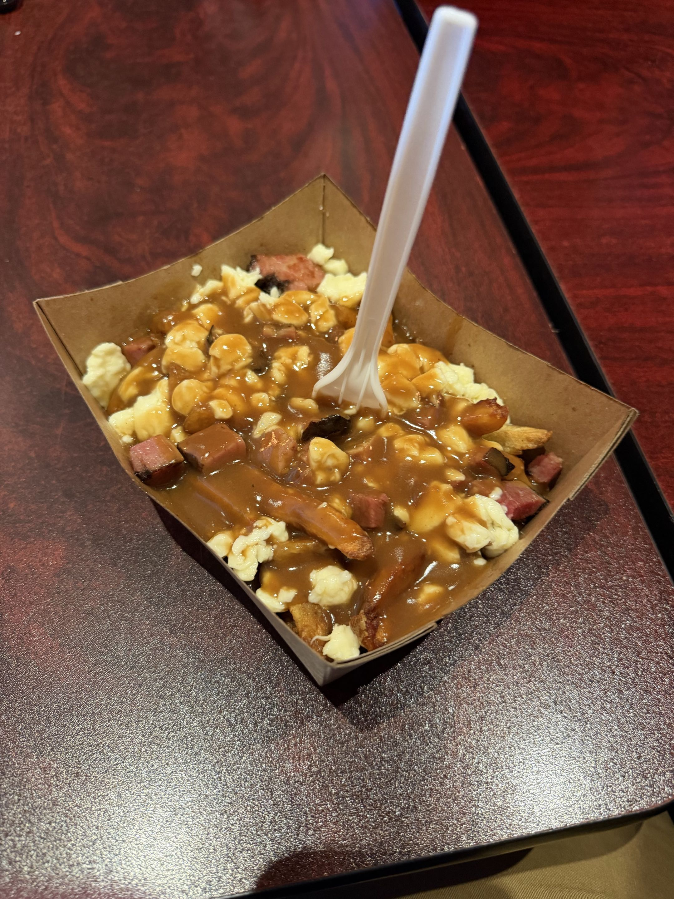
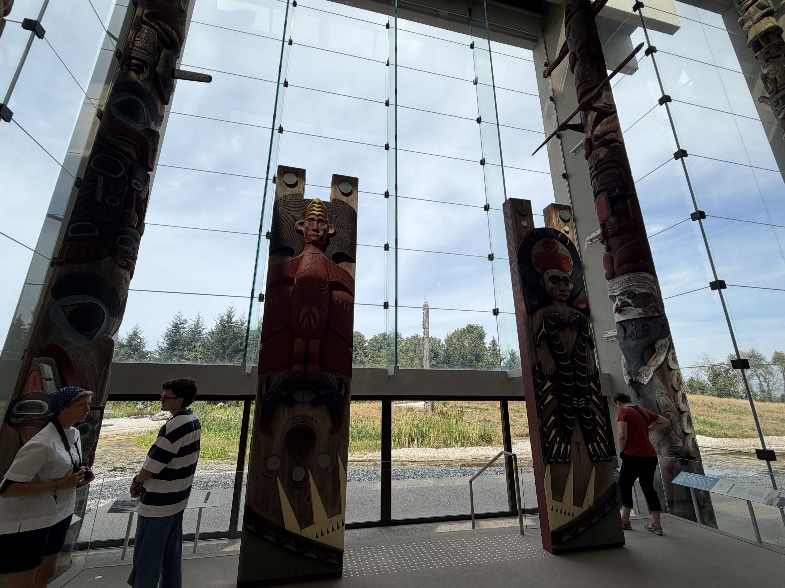
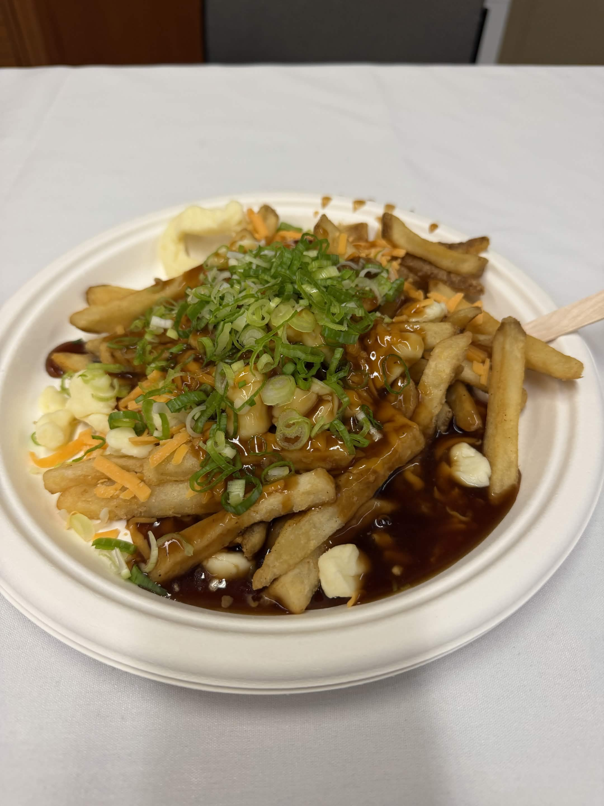
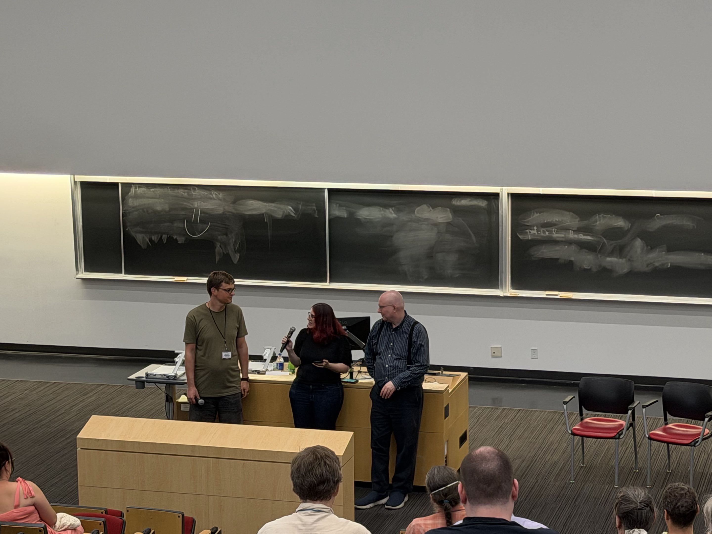
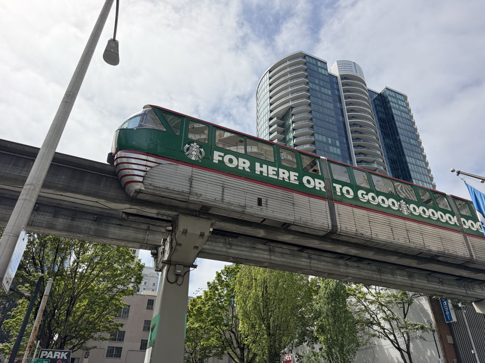

@ FOSSY 2026
Last week, I went to FOSSY 2026 to participate in Camp KDE!
During OSSNA back in May, I was invited to submit a proposal to Camp KDE at FOSSY 2026. I did! and it was accepted!
My colleague Owen's talk was also accepted to the Right to Repair Track. So we were going to Vancouver!

We flew MSP -> SEA on Wednesday ahead of the conference, and hung out in Seattle until our train to Vancouver, which was a beautiful ride.

Day One of FOSSY was a bit sleepy, everyone was still getting in the conference mood, and our train got in very late, meaning I was very tired.
Despite this, Owen's talk went great!

Thursday was also the night of the conference social event, which was a great time. I got to hear from some old friends (shout out Justin Wheeler) and meet a ton of cool people from the conference.
Day Two! I got to see a fantastic talk by Anthony Sorace about Plan 9, and finally understand what my good friend Jason has been proselytizing about.

As well as the Linux Kernel panel and a talk about databases and shifts to source available rather than open source.
I got to pay a visit to Granville Island, and a nearby beach, which felt a lot like Stillwater, MN.

Day Three was my talk! I was excited share with the KDE Community about why Ultramarine switched to Plasma back in UM43.
In short for this post, Budgie was behind on the features we needed to call ourselves modern, and Plasma was the best choice of a modern desktop.
I was nervous, but it went pretty well, and I got to answer some great questions about Ultramarine and how end users reacted to Plasma.
You can find my slides here.
The rest of the KDE track was great, but my favourite talk was Shawn Dunn's talk about Kalpa and Transactional Update (txnupd).
This talk got me really excited, and we're looking into txnupd for Ultramarine.
We ducked out for a meeting (with poutine!) at the end of the day, which sends us into Day Four!

Day Four (aka the day where I ate poutine for the fifth time) was the last day! I ducked out for the first session to visit the Museum of Anthropology on campus.

We saw some great talks by the Igalia staff about how their org works, they're a flat organiation, which is the focus of my research!
Then the conference feed us poutine, and we headed to closing remarks!


Then we were on our way back to Seattle to head home, and we had some adventures with Neal on the way.

Thank you so much to KDE for sending me out, and to the organizers for setting up a fantastic conference! 🐾